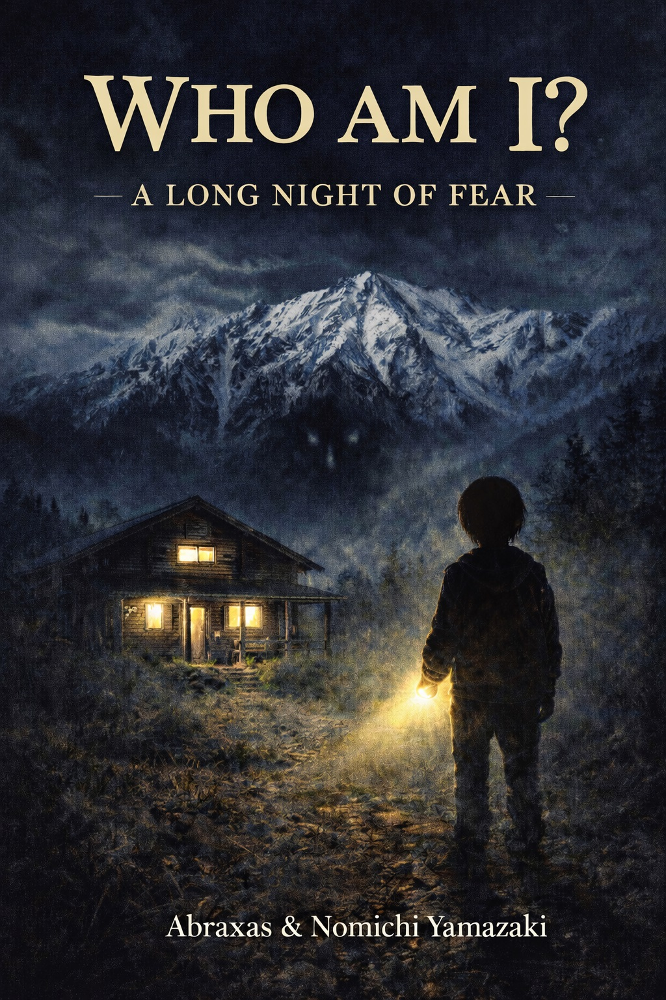

 A horror story set in a mountain hut near the summit of Mount Hakuba. Are you you? Clicking on the cover will take you to the contents.

A horror story set in a mountain hut near the summit of Mount Hakuba.
Are you you?
Clicking on the cover will take you to the contents.